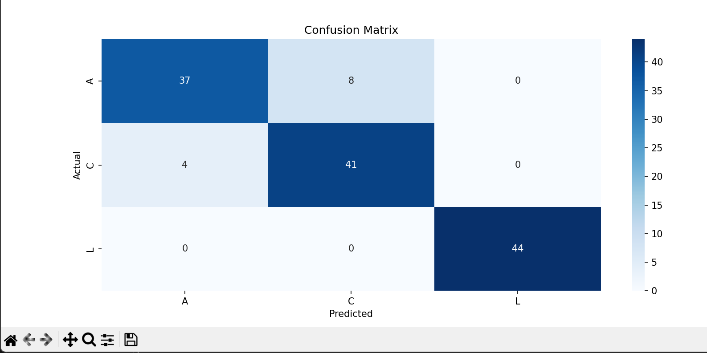
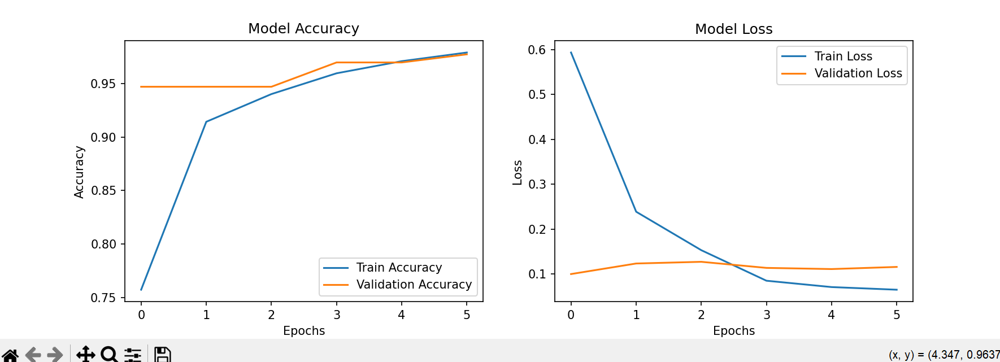

An AI-powered application for detecting and recognizing sign language gestures in real-time.
View Source on GitHubThis project leverages computer vision and deep learning to assist with sign language communication by identifying hand gestures through a webcam. The AI system is capable of real-time detection and classification of various sign language gestures, making it a breakthrough tool for bridging communication gaps.
ai_sign_detector/
│
├── data/ # Dataset folder
│ ├── raw/ # Raw collected images or datasets
│ ├── processed/ # Preprocessed images (resized, normalized)
│ ├── landmarks/ # Extracted hand landmarks (optional)
│ ├── train/ # Training set
│ ├── val/ # Validation set
│ └── test/ # Test set
│
├── models/ # Saved models and checkpoints
│ ├── sign_model.h5 # Final trained model
│ └── checkpoints/ # Intermediate checkpoints during training
│
├── scripts/ # Python scripts for the project
│ ├── collect_data.py # Script to collect and save images
│ ├── preprocess_data.py # Preprocessing pipeline (resize, normalize)
│ ├── train_model.py # Model training script
│ ├── evaluate_model.py # Script for testing and evaluation
│ ├── real_time_detect.py # Real-time sign recognition
│ └── utils.py # Utility functions (e.g., data loading, visualization)
│
├── notebooks/ # Jupyter notebooks for prototyping
│ ├── data_exploration.ipynb
│ ├── model_training.ipynb
│ └── evaluation.ipynb
│
├── logs/ # Training logs for debugging and monitoring
│ ├── tensorboard/ # TensorBoard logs
│ └── training_logs.txt # Custom log files
│
├── outputs/ # Outputs generated by the model
│ ├── predictions/ # Predicted results (e.g., images with overlays)
│ └── charts/ # Performance charts (loss, accuracy)
│
├── requirements.txt # List of required Python libraries
├── README.md # Overview and instructions for the project
└── .gitignore # Files and folders to ignore in version control
git clone https://github.com/timothyroch/ai_sign_detector.git cd ai_sign_detector
pip install -r requirements.txt
mkdir -p data/raw data/processed data/train data/val data/test models/checkpoints logs/tensorboard outputs/predictions outputs/charts
python scripts/collect_data.py
python scripts/preprocess_data.py
python scripts/data_split.py python scripts/train_model.py
python scripts/evaluate_model.py
python scripts/real_time_detect.py
Class Distribution: A bar chart showing the number of images per class.

Training Accuracy and Loss: Graphs displaying model performance over epochs.

Final Accuracy: 90% on validation data.
Supported Gestures: 'A', 'B', 'C', 'D' (expandable to more gestures).
Contributions are welcome! Follow these steps:
git checkout -b feature-branch).git commit -m "Add feature").git push origin feature-branch).This project is licensed under the MIT License. See the LICENSE file for more details.
For questions or feedback: